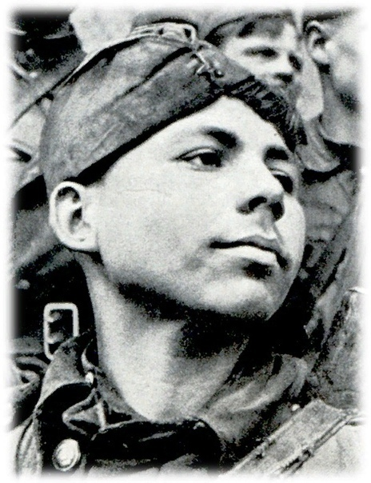
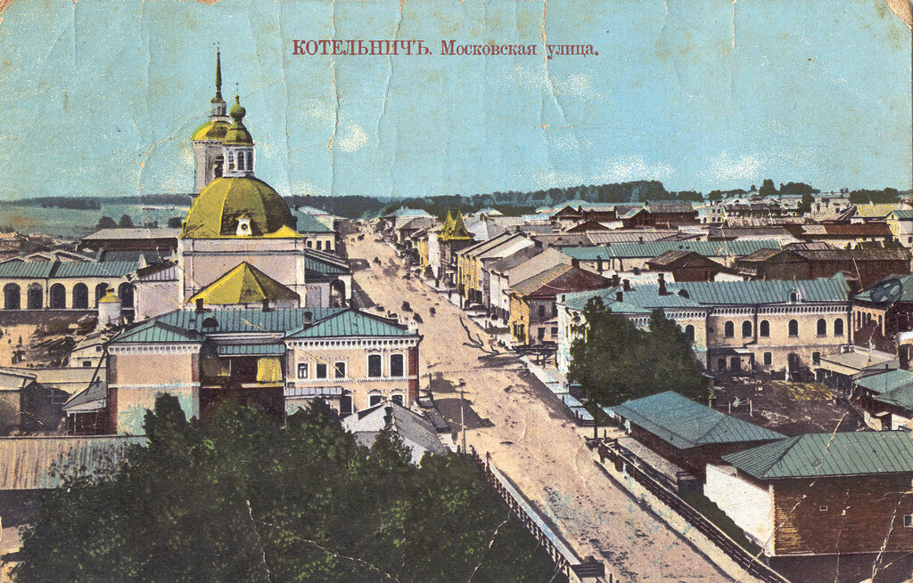
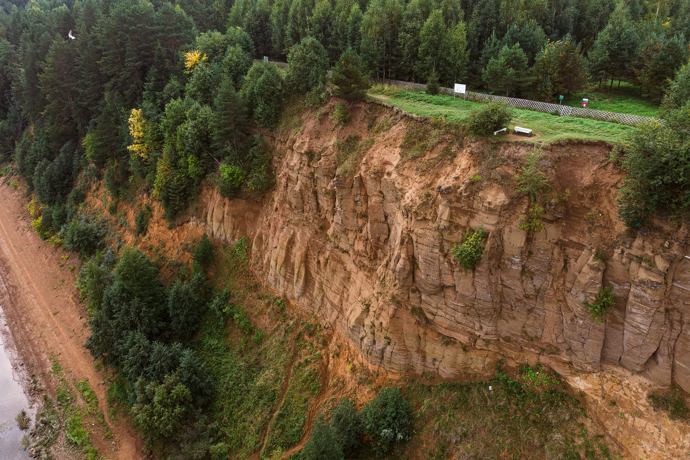
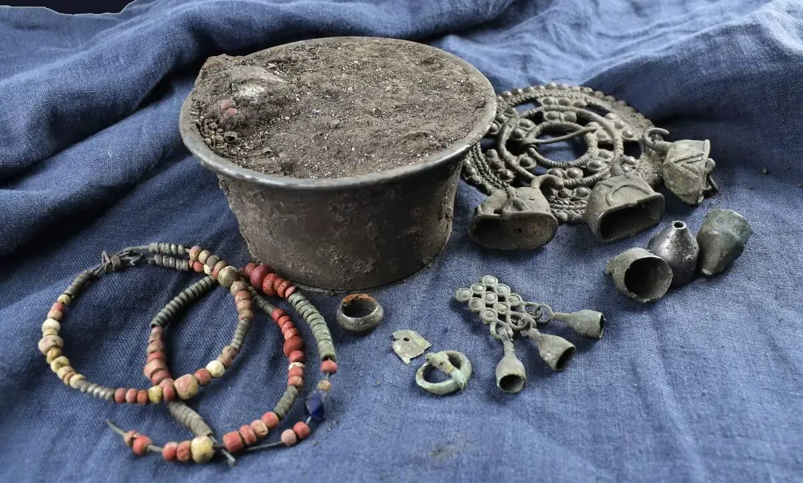
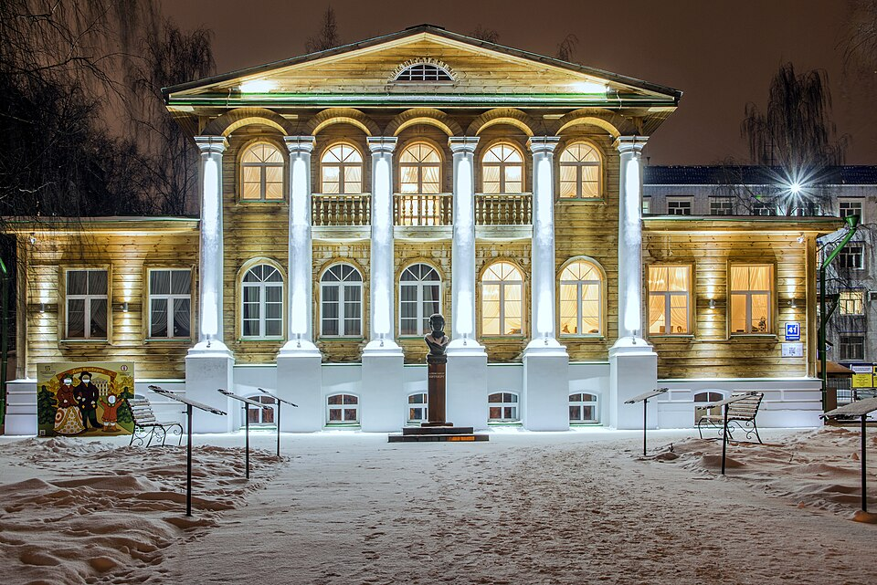

К 90-ЛЕТИЮ КИРОВСКОЙ ОБЛАСТИ · 1936–2026
Историко-культурное наследие Вятского края
Семь веков истории, народных промыслов и архитектуры — живая память земли вятской
Вятский край: семь веков истории
Вятская земля впервые упоминается в летописях XII века. Основанная новгородскими переселенцами, Вятка стала самобытным краем на стыке севернорусской, финно-угорской и пермской культур. Здесь в 1580 году монах Трифон заложил Успенский монастырь — первую каменную обитель Вятки, ставшую духовным центром края на века.
В 1780 году Екатерина II учредила Вятское наместничество, а город получил регулярный план и каменную застройку в стиле провинциального классицизма. Купеческие особняки, приходские церкви, земские здания — всё это формировало неповторимый облик губернского города.
5 декабря 1936 года была образована Кировская область. В 2026 году мы отмечаем 90-летие региона — повод вспомнить и сохранить всё, чем богата вятская земля.
Народные промыслы Вятского края
Живые традиции

Архитектура Вятки: от монастырских стен до купеческих палат
Кремлёвский холм над рекой Вяткой, белые стены Трифонова монастыря, нарядные особняки купцов Булычёва и Прозорова — архитектурный облик Кирова хранит слои истории от XVII по XX век.
Архитектура КироваРазделы проекта
Шесть путей к наследию Вятского края

Лица Победы
Портреты и судьбы жителей Кировской области — участников Великой Отечественной войны.
Перейти
Этнографическое наследие
Дымковская игрушка, капокорень, кружевоплетение — живые традиции Вятского края.
Перейти
Исторические города
Киров, Котельнич, Слободской, Яранск — купеческая застройка и старинные соборы.
Перейти

Памятники археологии
Городища ананьинской культуры, средневековые поселения, клады эпохи бронзы.
Перейти
Архитектура Кирова
От провинциального классицизма до конструктивизма — стили всех эпох в облике города.
ПерейтиВятка — страна своеобразная. Есть в ней что-то нетронутое, лесное, медленное и в то же время крепкое. Здесь чтут старину не из привычки, а из любви к ней.из записок вятского краеведа, XIX век